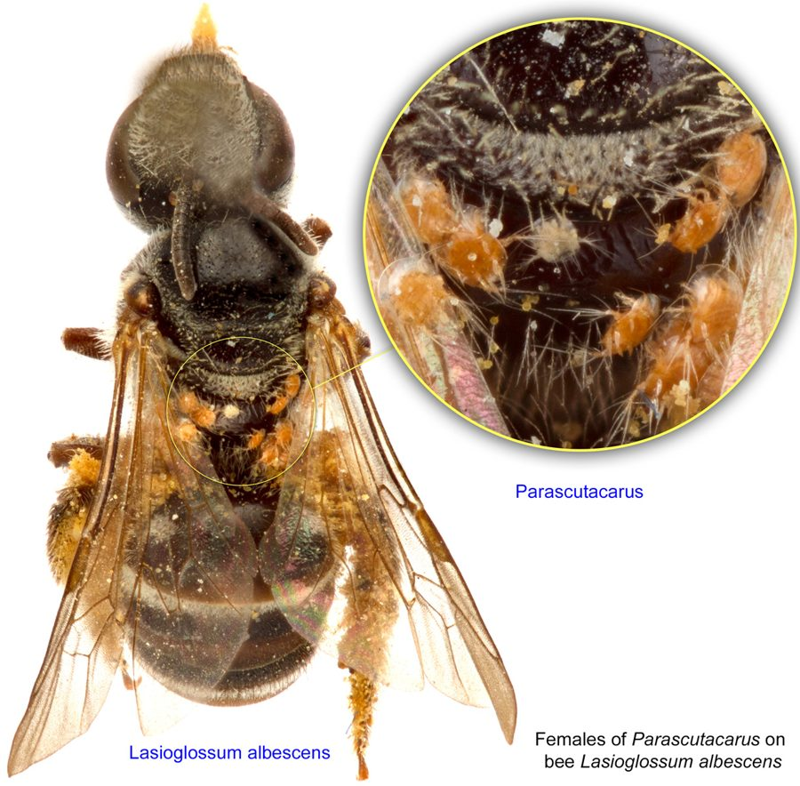

व्हाइटिश स्वेट बीWhitish Sweat Bee
Lasioglossum albescens · Halictidae · INS-0251

- Scientific name वैज्ञानिक नाम
- Lasioglossum albescens (Smith, 1853)
- Family कुल
- Halictidae
- Hindi हिंदी
- व्हाइटिश स्वेट बी
- Local names स्थानीय नाम
- whitish sweat bee, safed halictid madhumakhi, lasioglossum albescens, sweat bee, choti madhumakhi
- Status here यहाँ की स्थिति
- native
- Movement आवागमन
- Resident, here all year
- Known from कहाँ दर्ज
- Others have published records from the wider Awadh–Purvanchal plain, none yet from Basti–Ayodhya अवध–पूर्वांचल से दूसरों के प्रकाशित अभिलेख, बस्ती–अयोध्या से अभी नहीं
- IUCN IUCN
- not evaluated
- Review समीक्षा
- not yet reviewed
When to look कब देखें
Expected mainly in February, March, April, May, June, July, August, September, October, November. मुख्यतः फ़रवरी, मार्च, अप्रैल, मई, जून, जुलाई, अगस्त, सितंबर, अक्टूबर, नवंबर में अपेक्षित।
व्हाइटिश स्वेट बी / Whitish Sweat Bee
Lasioglossum albescens (Smith, 1853) — Halictidae
व्हाइटिश स्वेट बी — सरसों के खेतों और जंगली फूलों पर मडराने वाली एक नन्हीं, चमकीली और रोएंदार एकांतवासी मधुमक्खी। इसके पेट पर बारीक सफेद रोओं की खूबसूरत पट्टियां सजी होती हैं। यह गर्म मौसम में इंसानों के पसीने से लवण चूसने के लिए उनकी त्वचा पर बैठ जाती है। यह फसलों में परागण करने वाली बेहद महत्वपूर्ण कीट है।
Quick Identification त्वरित पहचान
| Feature | Description |
|---|---|
| Habit | Tiny, slender ground-nesting sweat bee visiting diverse open blossoms |
| Coloration | Dark brassy-black with faint greenish or metallic reflections on head |
| Abdomen | Elongate-oval with dense, narrow appressed bands of white tomentum |
| Scopa | Hind legs clothed in dense plumose hairs heavily laden with bright yellow pollen |
| Perspiration Attraction | Frequently lands on bare human skin during hot days to lick salty perspiration |
Field tip: Look closely at small yellow mustard flowers or composite weeds for tiny, hyperactive dark bees with whitish abdominal bands covered in bright yellow pollen grains.
हिंदी — कैसे पहचानें: नन्हा काला शरीर जिस पर सफेद रोओं की धारियां, पिछली टांगों पर पीला पराग, और गर्मी में पसीने की बूंदों पर बैठना।
Morphology आकारिकी
Adult description: Small, slender halictid bee. Head round, slightly broader than long, closely punctate; clypeus convex, slightly produced, with apical margin black in females and yellow-marked in males. Thorax finely granulose, scutum weakly shining with faint metallic bronze-green highlights; propodeum short, finely reticulate-rugulose. Metasoma smooth, blackish-brown; basal margins of abdominal tergites 2 to 4 adorned with distinct transverse bands of dense, appressed snowy-white tomentose pubescence. Hind tibiae and tarsi bearing dense pale golden-white scopal hairs adapted for carrying dry pollen. Forewings clear hyaline with distinct dark brown veins and a pale pterostigma.
हिंदी: यह एक बेहद छोटी मधुमक्खी है जिसके पेट पर सफेद बालों की धारियां होती हैं।
Behaviour & Ecology व्यवहार और पारिस्थितिकी
- Ground Nesting: Excavates vertical subterranean burrows in flat or sloping bare soil, often forming loose communal nesting aggregations.
- Sweat-Licking Habit: Attracted to human and livestock perspiration during hot midday hours to harvest mineral salts and moisture.
- Foraging Rhythm: Begins foraging early in the morning as soon as ambient air warms, making dozens of flower visits per trip.
- Pollen Transport: Collects pollen dry on plumose hind leg scopae rather than wet in pollen baskets, enhancing loose pollen transfer.
हिंदी: यह जमीन में नन्हे बिल बनाकर रहती है। गर्मी में यह पसीने से नमक चूसने के लिए हाथ-पैरों पर आकर बैठती है और फूलों से पराग लेती है।
Life Cycle / Phenology जीवन चक्र
- Subterranean Cells: Branching lateral tunnels lead to oval earthen cells smoothed with a waterproof secretions.
- Pollen Loaf Formation: Female crafts a moist spherical pollen-and-nectar ball inside each cell and lays an egg on top.
- Larval Maturation: Larva consumes the pollen provision in ten to twelve days, pupating within the earthen chamber without spinning a cocoon.
- Multivoltine Generations: Multiple overlapping broods occur from spring through post-monsoon, surviving winter as diapausing adult females in deep burrows.
हिंदी: मिट्टी के अंदर बने कक्ष में पराग और शहद का गोला रखकर उस पर अंडा दिया जाता है। बच्चा पराग खाकर बिना कोकून के बड़ा होता है।
Host Plants or Prey आहार
- Agricultural Crops: Forages on mustard (Brassica), pigeon pea, chickpea, sesame, and cucurbit blossoms across Awadh.
- Wild Flora: Visits wild herbs, weeds like dhaincha, roadside asters, and tree blooms of neem.
- Mineral Intake: Sips saline water droplets, urine patches, and mammal sweat for sodium.
हिंदी: यह सरसों, अरहर, चने और सब्जियों के फूलों का पराग और मकरंद खाती है। यह खनिजों के लिए पसीना भी पीती है।
Predators / Natural Enemies शत्रु
- Avian Predators: Bee-eaters, house sparrows, and babblers consume foraging sweat bees.
- Invertebrates: Crab spiders (Thomisidae) waiting inside yellow flower blossoms seize foraging bees.
- Cleptoparasites: Sphecodes cuckoo bees enter open ground burrows to deposit eggs on provisioned pollen balls.
हिंदी: फूलों में छिपने वाली मकड़ियां और छोटी चिड़ियां इन्हें खा जाती हैं। कुछ परजीवी मधुमक्खियां इनके बिलों में अंडे चुराकर दे देती हैं।
Agricultural / Human Relevance कृषि प्रासंगिकता
- Critical Crop Pollination: One of the most important native wild pollinators in Gangetic agriculture, enhancing seed set in oilseeds and pulses.
- Harmless Sweat Visitor: While landing on human skin can be startling, it possesses a tiny sting that is virtually painless and rarely used.
- Soil Nesting Vulnerability: Highly susceptible to chemical pesticide sprays and mechanical soil compaction from heavy machinery.
हिंदी: यह सरसों और दालों की फसलों में परागण कर उत्पादन बढ़ाने वाली बहुत उपयोगी मधुमक्खी है। इसका डंक बेहद कमजोर होता है और यह कभी नुकसान नहीं पहुंचाती।
Expected Locally स्थानीय रूप से अपेक्षित
Not a field record. Written from published accounts for eastern Uttar Pradesh. No confirmed local sighting yet — if you have seen it, that is what the atlas needs.
अभी तक स्थानीय पुष्टि नहीं। यह विवरण प्रकाशित स्रोतों से है, किसी अवलोकन से नहीं।
Expected across rural settlements, agricultural groves, gardens, and scrublands of Basti, Ayodhya, and neighbouring Awadh districts. GBIF holds published records from the wider Awadh–Purvanchal plain, none yet from Basti–Ayodhya. To confirm this species for the Atlas, provide a clear photograph showing key field characters, along with date, time, and specific location.
Distribution वितरण
Global range: Widespread across the Oriental region, from India and Sri Lanka east to Southeast Asia and Taiwan.
In India: Found throughout the mainland from the northern plains and Himalayan foothills to southern India.
In Uttar Pradesh: Recorded across the alluvial Gangetic plains from Varanasi, Kanpur, and Lucknow.
In Basti district / eastern UP: Expected throughout mustard fields, village commons, orchard understoreys, and ditch banks across Basti and Ayodhya.
हिंदी: यह मधुमक्खी भारत और दक्षिण-पूर्व एशिया में व्यापक रूप से पाई जाती है। उत्तर प्रदेश के खेतों और बागीचों में यह बहुत आम है।
Research Questions शोध प्रश्न
- How much does Lasioglossum albescens foraging contribute to mustard seed yields in Basti farms? / बस्ती के खेतों में सरसों की फसल में पैदावार बढ़ाने में इस मधुमक्खी का कितना योगदान है?
- What soil characteristics determine the nesting site selection for communal burrows? / जमीन में बिल बनाने के लिए यह मधुमक्खी किस प्रकार की मिट्टी को चुनती है?
- How does broad-spectrum insecticide application in pulses impact local sweat bee populations? / दालों पर कीटनाशक के छिड़काव का इस नन्हीं मधुमक्खी की संख्या पर क्या असर पड़ता है?
- What is the foraging range distance of an individual female from its subterranean nest? / एक मादा अपने जमीन के बिल से कितनी दूरी तक पराग खोजने जाती है?
- Does perspiration-foraging behaviour peak during specific high-temperature humidity windows? / पसीना चूसने का व्यवहार दिन के किस तापमान और उमस में सबसे ज्यादा देखा जाता है?
Similar Species मिलती-जुलती प्रजातियाँ
| Species | How to tell apart | हिंदी |
|---|---|---|
| Lasioglossum marginatum | Larger body size; pale abdominal hair bands wider and more yellowish | बड़ा शरीर, पेट की रोएंदार पट्टियां अधिक चौड़ी और पीली |
| Halictus scabiosae | Apical bands situated on margin of tergites rather than basal tomentum | पेट के खंडों के अंतिम किनारे पर बालों की पट्टी |
| Braunsapis cupulifera | Completely smooth, shiny black body without white abdominal hair bands; stem nester | पूरी तरह चिकना काला शरीर, तनों में घोंसला |
Field rule: A tiny brassy-black bee with narrow snowy-white hair bands across the abdomen visiting mustard blossoms or landing on sweaty skin identifies Lasioglossum albescens.
Taxonomy & Classification वर्गीकरण
Original description. Described by Frederick Smith in 1853 as Halictus albescens in Catalogue of Hymenopterous Insects in the Collection of the British Museum: Part I, p. 61.
Subspecies. Monotypic across the northern Indian subcontinent; placed in the large cosmopolitan genus Lasioglossum Curtis.
Family and order placement. Belongs to the family Halictidae, subfamily Halictinae (sweat bees), in the order Hymenoptera.
IUCN status rationale. Not evaluated by the IUCN; abundant, widespread, and ecologically vital across South Asian agricultural landscapes.
हिंदी: फ्रेडरिक स्मिथ ने 1853 में इसका वैज्ञानिक विवरण दिया था। यह हैलिक्टिडी कुल की एक सामान्य और महत्वपूर्ण पसीना मधुमक्खी है।
Photo Gallery फोटो गैलरी
No photos yet — add field photos to media/species/whitish_sweat_bee/ and run node scripts/sync_photos.js.
Photos needed आवश्यक फोटो
- [ ] Female dusted with yellow pollen on a yellow mustard flower (सरसों के फूल पर पराग से ढकी मादा मधुमक्खी)
- [ ] Individual licking perspiration from human skin (इंसान की त्वचा से पसीना चूसती मधुमक्खी)
- [ ] Subterranean nest burrow entrance on bare soil (मिट्टी पर बने नन्हे बिल का मुहाना)
References संदर्भ
- Smith, F. (1853). Catalogue of Hymenopterous Insects in the Collection of the British Museum: Part I. Andrenidae and Apidae, p. 61. British Museum, London.
- Bingham, C.T. (1897). The Fauna of British India, including Ceylon and Burma: Hymenoptera, Vol. I. Wasps and Bees, p. 501. Taylor and Francis, London.
- Murao, R. (2020). Discovery of Lasioglossum albescens (Smith, 1853) (Hymenoptera, Halictidae) from the Kinmen Islands, Taiwan. Check List, 16(4), pp. 963–967. doi:10.15560/16.4.963
- Michener, C.D. (2007). The Bees of the World, 2nd ed. Johns Hopkins University Press, Baltimore.
- GBIF Occurrence Data — Lasioglossum albescens (Smith, 1853), India (2025).
Source file: species/fauna/insects/whitish_sweat_bee.md